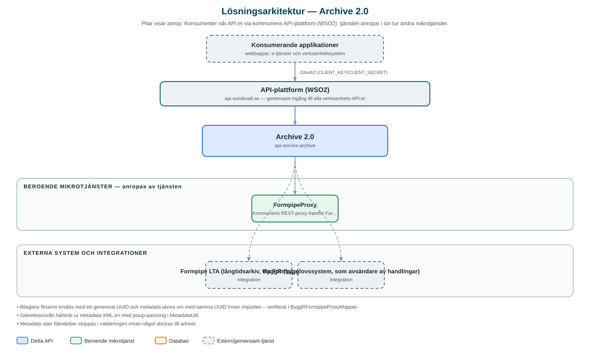

Archive
Tar emot arkivförfrågningar från bygglovssystemet ByggR och lämnar över handlingarna till kommunens långtidsarkiv Formpipe LTA.
Om API:et
Archive är länken mellan kommunens verksamhetssystem och långtidsarkivet. API:et tar emot en arkivförfrågan med metadata (XML enligt arkivstandard) och en bilaga, paketerar den till ett importärende och skickar den vidare till Formpipe LTA via kommunens Formpipe-proxy, som översätter till arkivsystemets WCF-baserade gränssnitt.
Dagens API har en endpoint, inriktad på handlingar från bygglovssystemet ByggR. Tjänsten validerar att metadata innehåller filändelser, byter ut bilagans namn och länk mot ett genererat UUID, härleder sekretessnivå ur metadata och kompletterar med kommunens leveransöverenskommelse (submission agreement) innan importen skickas.
Svaret innehåller det arkiv-id som långtidsarkivet tilldelat handlingen, alternativt strukturerade feluppgifter om importen misslyckades. Tjänsten är medvetet tunn: den lagrar ingenting själv utan är en ren förmedlingstjänst mot arkivet.
Det här gör API:et
- Arkivering av ByggR-handlingar – Tar emot metadata och bilaga från bygglovssystemet ByggR och skickar dem som ett importärende till långtidsarkivet.
- Metadatavalidering – Kontrollerar att metadata innehåller filändelser innan arkivering; ogiltiga förfrågningar avvisas med 400 Bad Request.
- Sekretesshantering – Sekretessnivå läses ur handlingens metadata och följer med till arkivet.
- Spårbart arkiv-id – Svaret innehåller arkivets id för den importerade handlingen, eller detaljerade feluppgifter från arkivsystemet.
- Robust felhantering – Fel från arkivsidan översätts till strukturerade problemsvar och klientfel mot proxyn redovisas som Bad Gateway.
API-dokumentation
API:ets samtliga resurser, parametrar och datamodeller finns beskrivna i en OpenAPI-specifikation som är hämtad ur källkodsförrådet. Den kan utforskas interaktivt i Swagger UI eller laddas ner som YAML. Programvaruförteckningen (SBOM) listar tjänstens samtliga tredjepartskomponenter med version och licens.
Teknisk dokumentation
Nedan beskrivs hur tjänsten är uppbyggd, vilka andra tjänster den anropar och vad som krävs för att driftsätta den. Informationen är härledd ur källkoden och dess konfiguration på GitHub.
Arkitektur

API:et är en mikrotjänst (Java 21, Spring Boot via kommunens gemensamma tjänsteplattform dept44 (8.0.8), byggd med Maven). Konsumenter når tjänsten via kommunens gemensamma API-plattform (WSO2) på api.sundsvall.se – tjänsten anropas aldrig direkt. Tjänsten anropar i sin tur andra mikrotjänster i kommunens tjänstelandskap. Övriga integrationer som förekommer i koden: Formpipe LTA (långtidsarkiv, via FormpipeProxy), ByggR (bygglovssystem, som avsändare av handlingar).
Teknikstack
- Språk: Java 21
- Ramverk: Spring Boot via kommunens gemensamma tjänsteplattform dept44 (8.0.8), byggd med Maven
- Övrigt: Feign-klient med Resilience4j circuit breaker mot FormpipeProxy, jsoup för XML-bearbetning av arkivmetadata
Beroenden till andra mikrotjänster
Tjänsten anropar följande mikrotjänster. Versionerna är hämtade ur källkodens integrationsklienter.
| Tjänst | Version | Användning |
|---|---|---|
| FormpipeProxy | – | Kommunens REST-proxy framför Formpipe LTA:s WCF-gränssnitt; tar emot importärendet och utför själva arkiveringen. |
Programvaruförteckning
Tjänsten bygger på 223 tredjepartskomponenter fördelade på 10 olika licenser. Till skillnad från tabellen ovan, som listar andra mikrotjänster, avses här de programbibliotek som ingår i bygget. Se programvaruförteckningen för hela listan.
Konfiguration och driftsättning
- integration.formpipe-proxy.base-url med anslutnings- och lästimeout för proxyn mot långtidsarkivet
- byggr.submission-agreement-id – kommunens leveransöverenskommelse som stämplas på varje importärende
- Ingen databas – tjänsten lagrar ingenting själv
- Anrop görs per kommun – municipalityId ingår i API-vägen
Noterbart ur källkoden
- Bilagans filnamn ersätts med ett genererat UUID och metadata skrivs om med samma UUID innan importen – verifierat i ByggRFormpipeProxyMapper.
- Sekretessnivån härleds ur metadata-XML:en med jsoup-parsning i MetadataUtil.
- Metadata utan filändelser stoppas i valideringen innan något skickas till arkivet.
- Tjänsten saknar helt databas och tjänstelagerpaket – all logik ligger i resurs- och mapperklasserna, vilket gör den till en ren förmedlingstjänst.
Källkod
Källkoden är öppen och finns hos Sundsvalls kommun på GitHub. I källkodsförrådet finns även instruktioner för att klona, konfigurera och starta tjänsten i egen miljö.